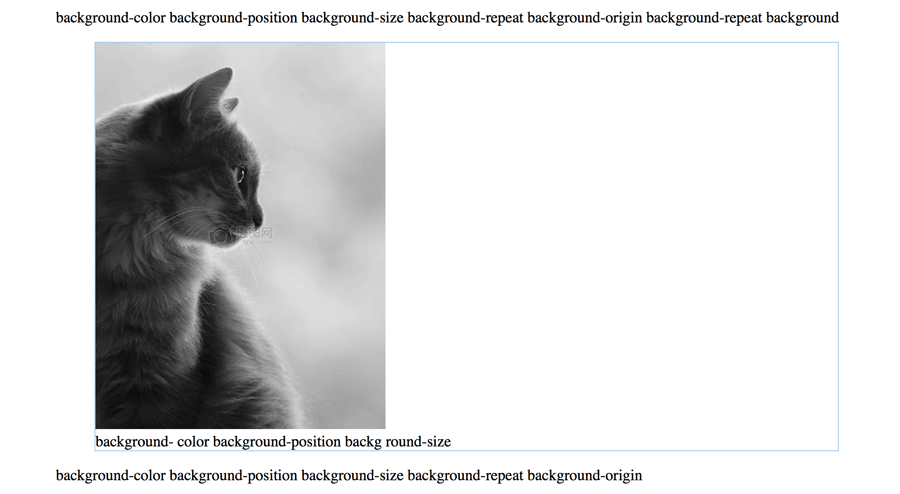
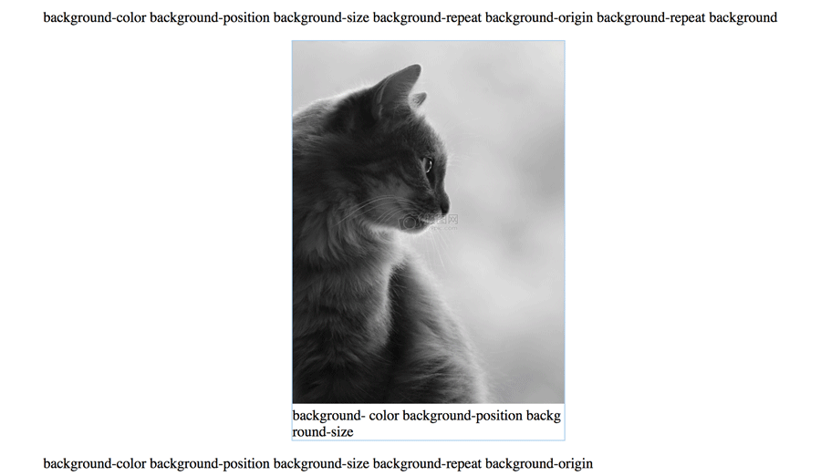

如果不给一个元素具体的height，它就会自动适应其内容的高度。假如我们希望width也有类似的行为，该怎么办呢？
<p>some text [···]</p>
<figure>
<img src="cat.jpg">
<figcaption>
background-color background-position background-size
</figcaption>
</figure>
<p>some text [···]</p>
给figure 加了一道边框，在默认情况下，看起来就是下图这样的： 但是我们想要的效果是这个 figure 元素能跟它所包含的图片一样宽，而且是水平居中的。 那就要用到width 和height 的 min-content属性了。这个关键字将解析为这个容器内部最大的不可断行元素的宽度（即最宽的单词、图片或具有固定宽度的盒元素）
figure {
border:1px solid #ace;
width: -webkit-min-content; /*考虑到兼容性，加前缀*/
width: -moz-min-content;
width: min-content;
margin:auto;
}
为了给旧版本浏览器提供一个平稳的回退样式，我们需要在使用这个技巧的同时，提供一个固定的maax-width 值：
figure {
max-width:300px;
max-width:min-content;
margin:auto;
}
figure > img{
max-width:inherit;}
对于现代浏览器来说，后一条 max-width 声明会覆盖前一条。如果figure 的尺寸是由内部因素决定时，第二条规则中的 max-width：inherit；就不会生效了。
参考书籍：Lea Verou《CSS揭秘》